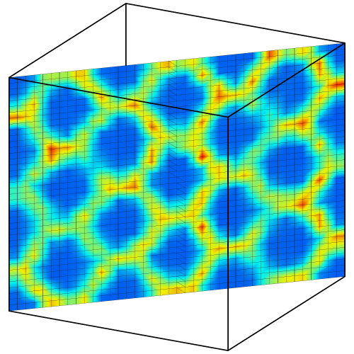

Voxel grids

The voxel grid data object in OVITO is a structured grid made of uniform voxel cells, each associated with numeric values. A voxel grid is typically a discretized representation of a three- or two-dimensional field.
Importing or creating voxel grids
Voxel grids can be imported into OVITO from simulation data files, for example charge density fields written by DFT simulation codes. See the list of supported input formats of OVITO to find out which formats can contain volumetric data. Alternatively, voxel grids can be dynamically generated within OVITO from other forms of data. The Spatial binning modifier maps particles onto a structured grid to produce a field representation of particle-based values.
Voxel grid properties
Like particles and bonds the cells of a voxel grid can be associated with an arbitrary number of numeric properties. Each property can represent a scalar field value, e.g. the local charge density, or a more complex vectorial quantity such as the magnetic moment vector. New properties may be assigned to an existing voxel grid with the Compute property modifier of OVITO.
Two- and three-dimensional domains
A voxel grid is always associated with a simulation cell domain, which defines the spatial extent of the grid in three dimensional space. OVITO supports two-dimensional and three-dimensional grids, both with and without periodic boundary conditions:
A two-dimensional voxel grid made of \(n_x \times n_y\) cells. Note that the two vectors spanning the grid’s domain may be embedded in three-dimensional space.
A three-dimensional voxel grid made of \(n_x \times n_y \times n_z\) cells. The three grid vectors spanning the grid’s domain can point along arbitrary directions in 3d space.
Visualization methods
{kind=link}
{kind=link}
There are different ways of visualizing voxel grids in OVITO. The Voxel grid visual element is the default representation automatically generated by the data pipeline to render just the outer cells of the grid (see first picture above). Thus, this visualization style makes only the field values on the surface of the domain visible.
You can apply the Create isosurface modifier to compute a isosurface of the volumetric field, which is way of visualizing the distribution of a scalar field quantity (see first picture on the right). Another way of showing the interior values of a three-dimensional voxel grid is provided by the Slice modifier. It lets you extract a planar cross-section along an arbitrary direction (see last picture below).
Data export
Exporting a voxel grid to an output file is is possible using OVITO’s file export function. Pick the output format VTK Voxel Grid to produce a data file that can be opened in the software ParaView.
See also
ovito.data.VoxelGrid (Python API)